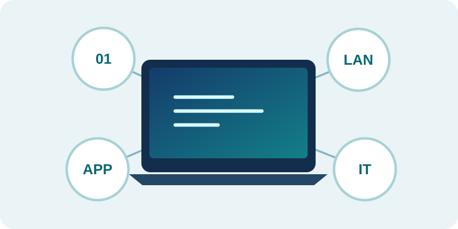

PILOT AVAILABLE
Computer Foundations
Binary, bytes, text encoding, networking, software selection, and practical troubleshooting.
- 4 original learning modules
- Interactive labs and scenarios
- 32 knowledge-check questions with explanations
OPEN ACCESS · SELF-PACED · PRACTICAL
Free interactive learning for curious beginners, career changers, and working professionals around the world. Learn the concepts, practice safely, and test what you know.
No login · No payment · No personal information required

START HERE
Build a foundation now, then expand your technical capabilities over time.
Binary, bytes, text encoding, networking, software selection, and practical troubleshooting.
Build confidence with identity, access, defensive controls, and safe security decision-making.
Future learning path — not yet available.
Explore cloud services, connectivity, availability, and the foundations of modern infrastructure.
Future learning path — not yet available.
Understand AI capabilities, limitations, security risks, and human oversight in everyday workflows.
Future learning path — not yet available.
OUR APPROACH
Clear explanations and original, relatable examples.
Use safe interactive tools to explore how technology works.
Make choices in realistic workplace situations.
Answer questions, review rationales, and repeat.
BUILT FOR EVERYONE
This independent educational resource is designed for learners anywhere in the world. No institution, vendor, or certification body sponsors or endorses the materials. All instructional examples and assessments are original.
Practice activities use fictional information and run in the browser. Do not enter passwords, personal records, or confidential business data. The pilot does not transmit or centrally store quiz results.
Created by an independent technology practitioner and educator. Educational content is separate from consulting services and institutional coursework.
Start with Computer Foundations. Work at your own pace, review explanations, and download a local learning summary.
Start the free pilot →